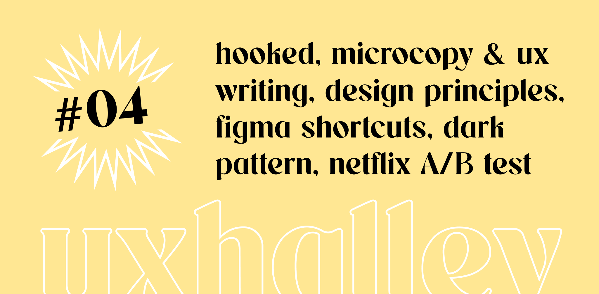

UX Halley, newsletter per designer
uxhalley, edizione #04
21 novembre 2022 — UX Halley: una newsletter bisettimanale che raccoglie news e links utili sulla UX. Un progetto dell'ecosistema The UX North Star, insieme al libro, al file UX Antimateria e a breve al podcast inedito. Le regole sono semplici: 5 minuti di lettura per link utili e news dal mondo della UX. Se ti interessa, lo approfondisci. Se ti piace, lo condividi. Facile facile.
Immagine di copertina dell'edizione di UX Halley, newsetter per designer
Link per designer suggerito nell'edizione di UX Halley, newsletter per designer
design principles
Sotto l'apprezzatissimo suggerimento di Simone Baboni, docente IED, ho scoperto questa lunghissima lista di principi di design. Onestamente la reputo un ottima reference dove attingere quando c'è bisogno di avere chiarezza su punti non chiari mentre si progetta. Ah, la cosa interessante è che si può contribuire, è "open source".
Link per designer suggerito nell'edizione di UX Halley, newsletter per designer
tutti gli shortcut di Figma
Vuoi potenziare le tue skill in Figma e velocizzare il tuo workflow? Beh, ecco una lista di shortcut veramente completa a cura di Gabriele Malaspina. Bonus tips: puoi crearti anche le tue shortcut personalizzate se hai un Mac, io per esempio ne ho 2 che sono davvero una bomba (se le vuoi conoscere scrivimi che ti dico come si impostano).
Link per designer suggerito nell'edizione di UX Halley, newsletter per designer
dark pattern tedx
Hai mai sentito parlare di #darkpatterns? Immagino di sì, ma quante volte hai approfondito per bene di cosa si tratta? Ecco, questo è un TEDx (video) molto interessante che parla dell'argomento. Dove sta il confine tra etica e business? Cosa ne pensi dei dark pattern? Fammelo sapere nei commenti!
Link per designer suggerito nell'edizione di UX Halley, newsletter per designer
a/b testing di Netflix
Netflix la sa davvero lunga sul catturare la nostra attenzione, e su questo investe molte risorse per trovare modi nuovi - e migliori - di offrire un'esperienza che permetta a qualunque spettatore di trovare rapidamente ciò che cerca o ciò che vorrebbe (o ciò che vuole Netflix? anche qui si parla di dark pattern). In questo articolo viene spiegato in modo chiaro come gestiscono l'algoritmo di A/B testing per capire cosa performa meglio a livello visivo e riguardo il motore di raccomandazione.
Link per designer suggerito nell'edizione di UX Halley, newsletter per designer
microcopy & ux writing italia
Ho conosciuto Valentina Di Michele un paio d'anni fa, mentre non ho avuto il piacere di conoscere Andrea Fiacchi: i due admin della community Microcopy & UX Writing Italia. Far parte delle giuste community, dei giusti gruppi, per avere un luogo in cui confrontarsi ma anche per condizionare la propria social bubble e il proprio feed con contenuti di qualità, è fondamentale al giorno d'oggi. Ecco, da quando sono in questa community posso dire che anche solo osservando e leggendo, ho sicuramente imparato molto. Consigliatissima :)
Link per designer suggerito nell'edizione di UX Halley, newsletter per designer
progettare il coinvolgimento
Conosci l'hook model? Hai mai sentito parlare di trigger interni ed esterni? Forse no, forse sì, non saprei, ma certamente avrai "subito" queste dinamiche in centinaia di occasioni. Una notifica di Facebook, la volontà di entrare su Instagram per controllare il numero di like, quel gioco online che apri ogni 2h per raccogliere le gemme... Insomma, se vuoi scoprire i trucchi e i perché, e soprattutto il "come", riguardo il coinvolgimento delle persone, questo libro non può non far parte della tua libreria.
Link per designer suggerito nell'edizione di UX Halley, newsletter per designer
poco utile ma divertente
Hai presente Linkedin, quel posto in cui esistono ruoli dell'ambito design più disparati? Design Researcher Guru, User Interface Design system magician, Power ranger of UX/UI, CRO Specialist Superhero, ecc. Vuoi passare 5 minuti spensierati e farti due risate? Ecco un generatore di ruoli da designer.